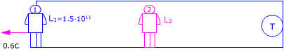
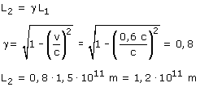
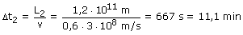

El rectángulo representa un recinto que se mueve respecto al observador 2 (Neutrón) con velocidad 0.6c El observador 1, la Tierra y el Sol están dentro del recinto  Observador 1 (Sol): Observador 2 (Neutrón) Aplicando la conversión de longitudes:  Vista desde el observador 2, en el momento de nacer el neutrón la Tierra estaba a una distancia de 1.2·1011 m acercándose con una velocidad 0.6c. Entonces tardará en llegar:  Para el observador 2 el neutrón vive 15 min y la Tierra tarda en llegar 11.1 min. El neutrón seguirá existiendo cuando la Tierra llegue hasta él |